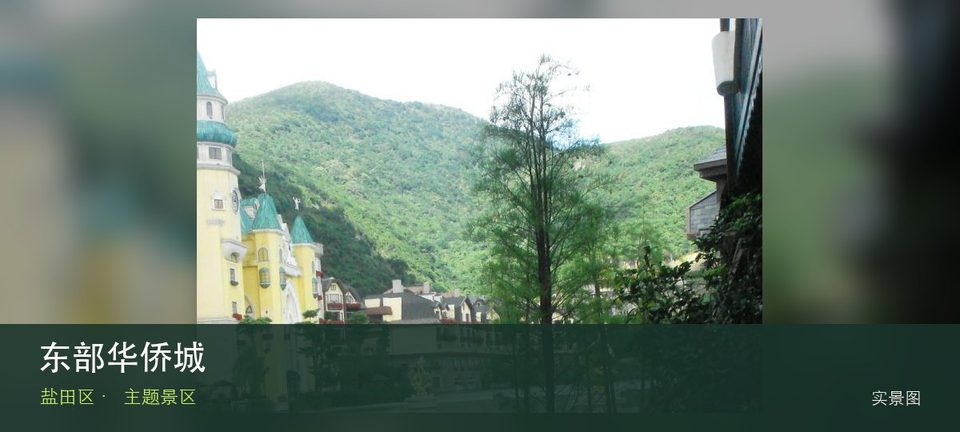
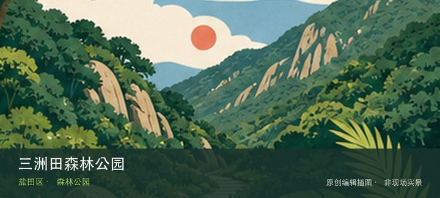
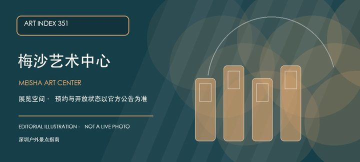

适合谁
适合愿意购买门票并留出整天的家庭和度假客；不适合只为某个旧项目临时到访。

SHENZHEN GUIDE · 111
大梅沙 · 主题景区
东部华侨城位于大梅沙山地，大型付费主题景区将山地景观、娱乐项目和度假设施组合运营，具体开放项目与接驳会随检修和天气变化。先辨认山地主题景观，再观察分区娱乐项目，两者共同说明这里为何不能被同类地点的泛化标签替代。带孩子到访时，可把山地主题景观与分区娱乐项目转化为两项能够完成的观察任务，不必追求看完所有设施。活动、花期和设备开放受日期影响，先确认预约、遮阴、饮水与返程条件。
WHY GO
适合愿意购买门票并留出整天的家庭和度假客；不适合只为某个旧项目临时到访。
先从官方渠道确认当日开放分区、票种与交通，选择一个主园区；遇停运项目不跨越围挡或追加山野路线。
公共交通先到大梅沙山地片区，再以东部华侨城公开参观入口为终点；多入口地点须按计划游线选择入口，并预先锁定返程站点。
导航至东部华侨城官方开放入口配套或邻近正规公共停车场；周末满位即改乘公共交通，不在绿道口、村道或消防通道临停。
秋冬与春季通常更舒适；花期、采摘和节庆随日期变化，夏季避开正午并预留防暑避雨方案。
NEARBY IDEAS

编辑配图·非现场实景三洲田森林公园位于盐田东北部，东园、西园和大尺度山林连接盐田与龙岗方向，旧穿越轨迹复杂，官方开放入口与道路状态是首要信息。
 编辑配图·非现场实景
编辑配图·非现场实景
木星美术馆位于福田保税区，民营当代艺术空间位于产业园区语境，展览常围绕年轻艺术、跨媒介实践与收藏项目展开，门禁比市属馆更需确认。

编辑配图·非现场实景梅沙艺术中心位于盐田环梅路，官方名录将它列为面向公众的艺术空间。它适合与梅沙滨海路线分开安排：先确认当期展览和预约，再根据天气决定是否把海岸散步作为前后段。